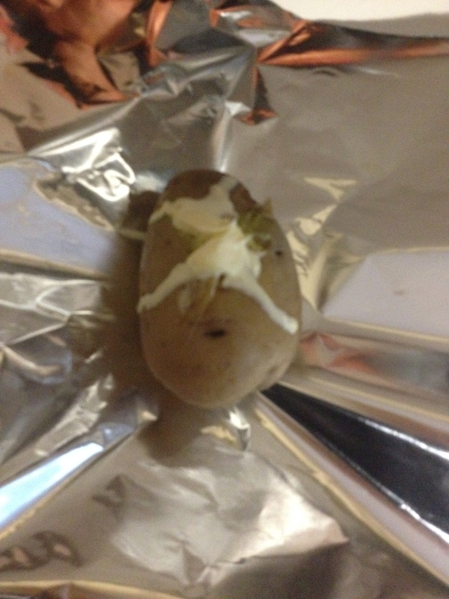
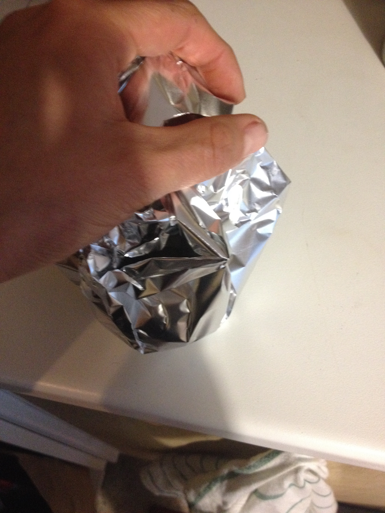

Sour cream jacket potato¶

- Serves: 2
- Type: Side dish
Background¶
As mentioned in the sour cream recipe (Sour cream topping), I become a big fan of jacket potatoes in Munich. Since then I try to make this delicious side dish when is possible no matter the cholesterol in the cream.
Ingredients¶
- 2 medium potatoes
- 150 ml sour cream (Sour cream topping)
- Butter
- Salt and pepper to taste
Steps¶
Wash and dry the potatoes
Smear the potatoes with butter (if you have garlic butter it is tastier!)
Salt and sprinkle some pepper on them
Preheat the oven at 160°C
Wrap the potatoes with aluminium foil
Place them in a oven tin and bake them for 40 minutes
Once out of the oven, open the aluminium foil and make them cold down for 10-15 minutes
In the top surface, cut a cross in the potato and fill with sour cream.
Wrap the potatoes again and serve.

Can be served with¶
- Stinco ( Schweinshaxe (pork shank) )
- Beef steak
- Chicken
- Pork